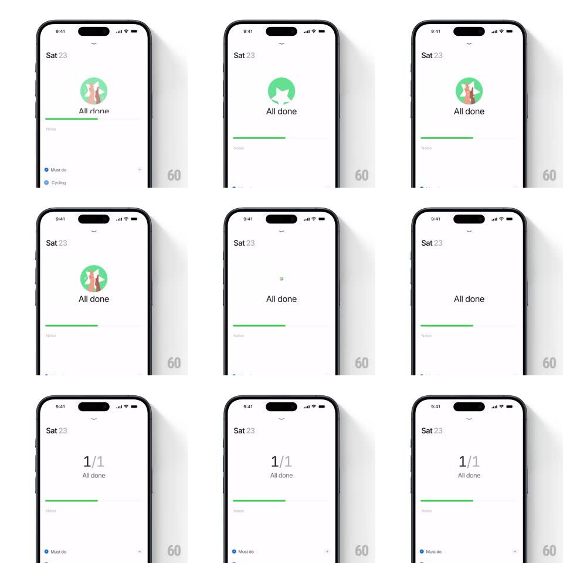

Media
Frame-by-frame

Rebuild this interaction 1:1: Persist's all-done celebration - completing the last task on the day page morphs the green progress circle into a high-five illustration with confetti, then settles into the "1/1 All done" completion badge.

Rebuild this interaction 1:1: Persist's all-done celebration - completing the last task on the day page morphs the green progress circle into a high-five illustration with confetti, then settles into the "1/1 All done" completion badge. ## Integration Integration: stack-agnostic spec - springs given as stiffness/damping, timed motions as duration + curve; map every value to your framework and animation library of choice. ## Scene Persist's clean white day page: "Sat 23" header with chevron, a 0/1 counter, the green progress bar, and the task list (Must do, Cycling, Not to do, Maybe). The celebration plays at the top of the list area. ## Motion spec Pattern: staged completion celebration. - Last checkbox tapped: the green progress circle at the top scales up (1 -> 1.4, 200ms, ease-out) and morphs into the high-five illustration (two hands meeting, green circular backdrop) - shape crossfade with a 250ms morph, no hard swap. - Confetti bursts from the high-five point: ~20 small pieces (squares and circles, app palette) on outward arcs with gravity, tumbling (random rotation), over ~900ms. - "All done" types/fades in beneath the illustration (200ms). - After ~1.2s, the illustration deflates (scale -> 0.8, opacity out, 250ms) and the numerical badge appears in its place: "1/1" above "All done", sliding up with a small spring (translateY 10px -> 0, spring ~400/22, 300ms). - The progress bar fills to 100% green in sync with the initial morph (300ms, ease-out). ## Calibration - Three beats - celebrate, hold, settle - total ~2s before the page returns to scannable. - Confetti stays inside the top section; it never rains over the whole list. ## Reduced motion Badge swaps directly; no confetti. ## Don't miss - The counter animates 0/1 -> 1/1 as part of the settle, not at the tap. - The high-five illustration is the app's flat style - two simple hands, no outlines.